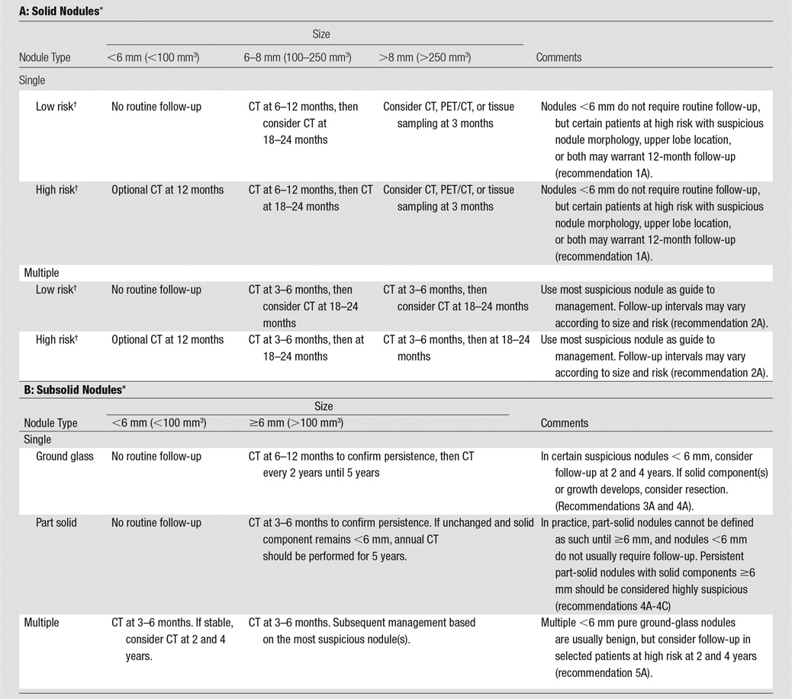
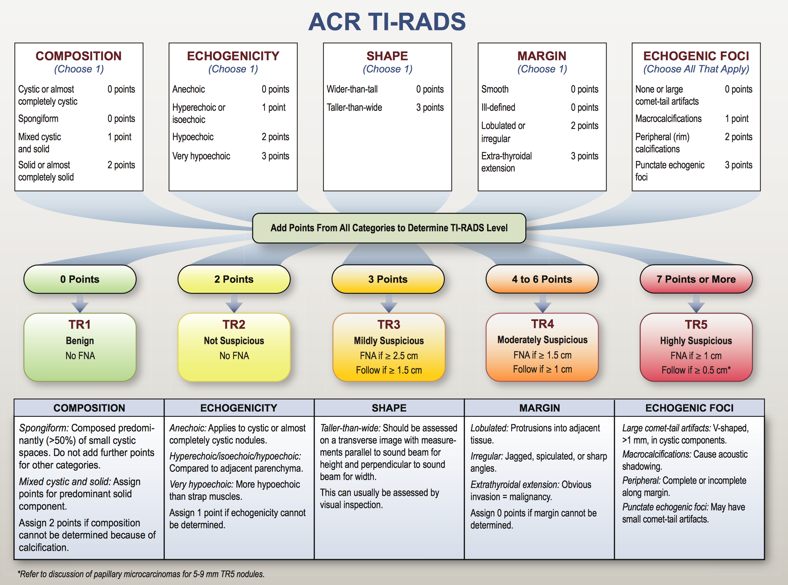

- Adrenal
:1038-1044.") Management of Incidental Adrenal Masses: A White Paper of the ACR Incidental Findings Committee.J Am Coll Radiol. 2017 Aug;14(8):1038-1044.
Management of Incidental Adrenal Masses: A White Paper of the ACR Incidental Findings Committee.J Am Coll Radiol. 2017 Aug;14(8):1038-1044. - Kidney
Management of the Incidental Renal Mass on CT: A White Paper of the ACR Incidental Findings Committee.J Am Coll Radiol. 2017 Aug;14(8):1038-1044.
- Liver
Managing Incidental Findings on Abdominal CT: White Paper of the ACR Incidental Findings Committee.J Am Coll Radiol. 2010 Oct;7(10):754-73.
- Lung

Guidelines for Management of Incidental Pulmonary Nodules Detected on CT Images.Radiology. 2017 Jul;284(1):228-243.
- Lymph Nodes
:833-9.") Managing Incidental Findings on Abdominal and Pelvic CT and MRI, Part 3: White Paper of the ACR Incidental Findings Committee II on Splenic and Nodal Findings.J Am Coll Radiol. 2017 Aug;14(8):1038-1044.
Managing Incidental Findings on Abdominal and Pelvic CT and MRI, Part 3: White Paper of the ACR Incidental Findings Committee II on Splenic and Nodal Findings.J Am Coll Radiol. 2017 Aug;14(8):1038-1044. - Ovary / Adnexa
 September 2010")
 September 2010")
 September 2010") 1 cm
Managing Incidental Findings on Abdominal and Pelvic CT and MRI, Part 1: White Paper of the ACR Incidental Findings Committee II on Adnexal Findings
J Am Coll Radiol 2013;10:675-681."
>
1 cm
Managing Incidental Findings on Abdominal and Pelvic CT and MRI, Part 1: White Paper of the ACR Incidental Findings Committee II on Adnexal Findings
J Am Coll Radiol 2013;10:675-681."
>
-
Management of Asymptomatic Ovarian and Other Adnexal Cysts Imaged at US: Society of Radiologists in Ultrasound Consensus Conference Statement.Radiology: Volume 256(3) September 2010
-
Managing Incidental Findings on Abdominal and Pelvic CT and MRI, Part 1: White Paper of the ACR Incidental Findings Committee II on Adnexal FindingsJ Am Coll Radiol 2013;10:675-681.
-
- Pancreas

Management of Incidental Pancreatic Cysts: A White Paper of the ACR Incidental Findings Committee.
J Am Coll Radiol. 2017 Jul;14(7):911-923.")

Management of Incidental Pancreatic Cysts: A White Paper of the ACR Incidental Findings Committee.
J Am Coll Radiol. 2017 Jul;14(7):911-923.")

Management of Incidental Pancreatic Cysts: A White Paper of the ACR Incidental Findings Committee.
J Am Coll Radiol. 2017 Jul;14(7):911-923.")

Management of Incidental Pancreatic Cysts: A White Paper of the ACR Incidental Findings Committee.
J Am Coll Radiol. 2017 Jul;14(7):911-923.") Management of Incidental Pancreatic Cysts: A White Paper of the ACR Incidental Findings Committee.J Am Coll Radiol. 2017 Jul;14(7):911-923.
Management of Incidental Pancreatic Cysts: A White Paper of the ACR Incidental Findings Committee.J Am Coll Radiol. 2017 Jul;14(7):911-923. - Spleen
Managing Incidental Findings on Abdominal and Pelvic CT and MRI, Part 3: White Paper of the ACR Incidental Findings Committee II on Splenic and Nodal Findings.J Am Coll Radiol. 2017 Aug;14(8):1038-1044.
- Thyroid

:143-50.") Managing incidental thyroid nodules detected on imaging: white paper of the ACR Incidental Thyroid Findings Committee.J Am Coll Radiol. 2015 Feb;12(2):143-50.
Managing incidental thyroid nodules detected on imaging: white paper of the ACR Incidental Thyroid Findings Committee.J Am Coll Radiol. 2015 Feb;12(2):143-50.
What to do with incidental thyroid nodules identified on imaging studies? Review of current evidence and recommendations.Curr Opin Oncol. 2015 Jan;27(1):8-14.
ACR Thyroid Imaging, Reporting and Data System (TI-RADS): White Paper of the ACR TI-RADS CommitteeJ Am Coll Radiol. 2017 Aug;14(8):1038-1044.